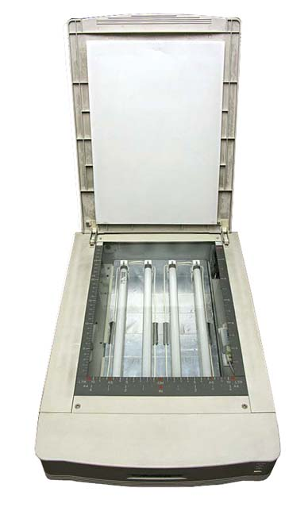
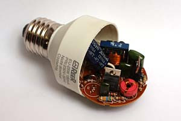

Misure & laboratorio
Bromografo UV per circuiti stampati
Realizzato usando uno scanner in disuso. "Fai da te" di R.Chirio
Indice della pagina
Maggio 2007.
Tutti quelli che per hobby o per lavoro hanno a che fare con l'elettronica, devono anche realizzare i circuiti stampati per il montaggio dei componenti elettronici dei vari progetti.
Quando la necessità è di pochi pezzi per la sperimentazione, è molto economico realizzare il progetto dei circuiti stampati in proprio.
Questo ottimo bromografo autocostruito è realizzato dentro uno scanner in disuso. Questo in particolare è un TAMARAK, uno scanner molto robusto con tutto il corpo in profilato di alluminio e il fondo in lamiera. L'altezza interna è di 4cm buona per inserire all'interno i tubi neon UV e i relativi reattori.
Un timer con un tempo fisso di 2 minuti è sufficiente per delle buone incisioni su basette presensibilizzate. Per estendere l'applicazione a varie tipologie di basette, può essere utile regolare il tempo da 30" a 5 minuti.

|
Materiale |
Dove |
|
|---|---|---|
|
● 4 neon UVA Philips TL8W |
negozio elettricità |
|
|
● 2 reattori 18W 220V |
negozio elettricità |
|
|
● 4 starter |
negozio elettricità |
|
|
● 4 porta starter |
negozio elettricità |
|
|
● 8 porta neon |
negozio elettricità |
|
|
● 1 timer 0-5 minuti (meccanico o elettronico) |
negozio elettricità |
|
|
● 1 interruttore bipolare |
negozio elettricità |
|
|
● nastro adesivo in alluminio |
negozio ferramenta |
|
|
● scanner usato |
da trovare usato |
|
Timer elettronico
Utilizzando un integrato specifico della Siemens è possibile realizzare un timer programmabile, funzionante direttamente a 220V.
SAB 0529 timer (scarica Data Sheet pdf - 516kb) Funziona bene anche il SAE 0530
Schema di pag. 500 Data Sheet, al posto del motore collegare il gruppo reattori neon. Programmare per 2 minuti.
REALIZZAZIONE
Individuato lo scanner più adatto per questo impiego, bisogna svuotarlo di tutti i meccanismi e schede elettroniche. Deve restare solo il corpo con il vetro e il coperchio. Eventualmente si può mantenere il connettore e l' interruttore se a 220V.
Fissare gli 8 supporti per neon sul fondo e posizionarli a distanze uguali per distribuire equamente la luce UV su tutta la superficie del vetro.
Fissare ai lati o sul frontale i due reattori (ballast) e i 4 starter, possono essere messi in qualsiasi posizione, importante che non interferiscono con la luce emessa dai tubi.
Foderare tutto il fondo, sotto ai tubi con l'alluminio riflettente adesivo, così da avere una buona riflessione verso l'alto.
Effettuare il collegamento dei tubi con i rispettivi starter e con la serie dei ballast.
Collegare l'interruttore generale con il timer e verificare il tempo di accensione mediante un cronometro.
Si può anche usare un timer meccanico recuperato da un forno a microonde.
Se tutto a posto si può procedere con il collaudo, tutti i tubi si devono accendere ed avere la stessa intensità.
Procedere alla sensibilizzazione di una basetta di prova secondo i dati del fornitore.
Si è verificato che 2 minuti sono un tempo giusto per buone incisioni su basette presensibilizzate normalmente in commercio.
......
MIGLIORAMENTO

Per i più esperti, si può eliminare il reattore e lo starter), e impiegare i ballast elettronici, recuperati da lampade neon basso consumo esaurite.
In questo caso, usando il gruppo elettronico di lampade a tubo singolo da 7-10W oppure quelle a tubo doppio da 16-20W, possiamo alimentare i Tubi UV da 8W con il vantaggio dell'accensione immediata e dell'aumento del rendimento luminoso.
Inoltre non da poco, contribuiamo a recuperare a costo zero, una scheda elettronica funzionante che andrebbe inutilmente a finire in discarica.
...2013. Per i più esperti, si può pensare di usare diodi led UV al posto dei tubi, però i diodi UV di potenza sono parecchio costosi, pertanto è consigliabile usare diodi led da 5mm, il sistema a led offre vantaggi in quanto alimentabile a 12V e realizzabile su scanner recenti con basso profilo.
La realizzazione del bromografo comporta avere delle competenze nei montaggi elettrici, è necessaria un'attrezzatura minima, quale un saldatore a stagno, dello stagno, cavi elettrici, attrezzi vari per elettronica, trapano con punte, ecc.
Non si risponde per danni a cose e persone e per un uso improprio della realizzazione.
2007© Roberto Chirio: all rights reserved.